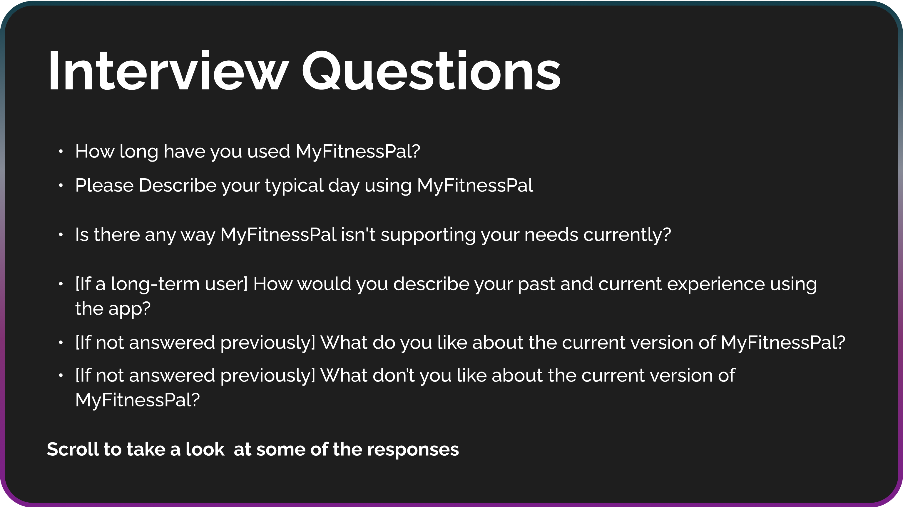

Revamping MyFitnessPal’s User Experience to Motivate Disgruntled Users & Better Fit Business Needs
My Role
I did everything in this solo project!
Timeline
Iteration 1: Dec. 2023Iteration 2: Mar.-Apr. 2024
What is MyFitnessPal?
Millions of people use MyFItnessPal to log their meals and track calories on a daily basis, providing users’ with in-depth breakdowns of their day-to-day nutrition and their progress in achieving goals.
It also helps users find workouts, recipes and fitness communities through a Discover feature. Additionally, the Plans page provides long-term step-by-step eating and exercise solutions.
The Problem
After acquiring MyFitnessPal in 2020, Francisco Partners introduced major changes that prioritized profitability and left the needs of users on the backburner.
The private equity firm hid key features, such as barcode scanning, behind premium subscriptions, increased the number of external advertisements and implemented additive features that did not address primary use cases for users. The addition of these changes over the years created an increasingly more disjointed user experience as the interface was not reworked to address the differences.
The Solution
1. Revamped Landing Page
- Combined Food Log, Nutrition and Progress into a Diary landing page.
- Added a side scroll to quickly access recent meals and nutrition.
- For the average user who is logging their calories and tracking their progress on a daily basis, this landing page provides quick access to all necessary use cases.
- MyFitnessPal is primarily a calorie-counting app. By reducing the friction for using these calorie-counting features, long-time users are serviced and newcomers will be able to overcome the learning curve much quicker.
2. Updated Navigation Bar
- The updated navigation bar emphasizes the Discover and Plans pages. These pages, which increase user retention and promote premium subscriptions, are now more accessible to users who previously struggled to find them.
- The Newsfeed was removed from the navigation bar to prevent clutter and make room for a universal quick add button.
- The universal quick add button allows users to add foods, exercises and even water intake from any page within the app! This addition services the calorie-counting function of the app, as well.
3. Introducing Alex, your Personal Fitness Persona!
- Alex helps onboard users to the world of fitness. They can curate meal recommendations that fit users’ unique dietary goals and helps you navigate the confusing path on the way to a healthy lifestyle.
- Alex serves as an accountability partner for users struggling to stick to their routine or diet. As they can keep up with users on a personal basis, Alex can resonate with users and build trust all while proving to be a reliable source of health information.
- Leveraging already-gathered data (vast databases of recipes, exercises and fitness concepts) to create a generative AI chatbot.
User Research
Many users are intimidated, confused, annoyed or all of the above when using the app.
I interviewed three MyFitnessPal users to get a better insight into what works well and what doesn’t. In addition, I consulted online forums, such as App Store Reviews and Reddit, to validate interviewee concerns and to hedge potential blind spots that were not discussed. Take a scroll below to see some of the insights!

Key Pain Points
1. There is a poor balance between user and business needs
Long-term users, in particular, feel that too much of the app has been hidden by premium access. This has greatly limited the value and usability of the app.
2. There is a lack of motivational factors
Consistently eating the right foods is hard, but the act of logging it into MyFitnessPal isn’t it. Users need a stronger source of motivation than just the days logged streak. It is not enough to motivate users to stick to their health plans and continue using MyFitnessPal.
3. Becoming health-conscious is confusing
New users want to improve their habits through MyFitnessPal but it's difficult to know where to start and even harder to find trustworthy knowledge sources along the way.
4. It’s difficult to navigate the app
Navigating through the app proves challenging due to its complex layout and lack of intuitive design cues.
Literary Analysis
Accountability Partners: A 5% chance of NOT achieving your goal”
conducting user interviews, I began researching articles discussing topics in motivation,
commitment and achievement. The white paper research helped assign concepts to what I had learned
in the interviews and occasionally provided a better insight into the demands of those looking to
change their lives for the better. Most insightful of all was this statistic from the
American Society of Training and Development
When making the conscious decision to achieve a goal, you only have a 40% likelihood of succeeding. However, when you have scheduled appointments with an accountability partner, the odds jump to 95%!
When making the conscious decision to achieve a goal, you only have a 40% likelihood of succeeding. However, when you have scheduled appointments with an accountability partner, the odds jump to 95%!
Competitive Analysis
Competitors are solving the same issues in more innovative ways.
Since the early 2010s, MyFitnessPal has been the go-to calorie counting app on the market. This leading status in conjunction with its largest-in-market food databases have afforded it a decade-long market advantage. However, this advantage will diminish over years of stagnation as competitors innovatively tailor their solutions to user needs.
Noom focusses on the psychology of weight loss. It has successfully founded its platform on instilling sources of intrinsic motivation in users. Additionally, Fitbit leverages its hardware to provide physical insights that its calorie-counting competitors cannot match. Conversely, Lose It! and Lifesum are the most comparable to MyFitnessPal. They provide a nearly-identical user experience but have yet to remove key features from users on free plans.
Noom focusses on the psychology of weight loss. It has successfully founded its platform on instilling sources of intrinsic motivation in users. Additionally, Fitbit leverages its hardware to provide physical insights that its calorie-counting competitors cannot match. Conversely, Lose It! and Lifesum are the most comparable to MyFitnessPal. They provide a nearly-identical user experience but have yet to remove key features from users on free plans.
SWOT Analysis
A SWOT analysis is a strategic planning tool used to assess the strengths, weaknesses, opportunities, and threats related to a project, business venture, or in this case, a UX design. It was employed to help identify internal and external factors that may positively or negatively impact the success of this redesign. As it provides a top-level approach, SWOT analysis allow individuals to draw a variety of conclusions which must be further fleshed out in their own right.
Jobs To Be Done
How might we help MyFitnessPal balance business and user needs?
Despite being disliked by users, paywalling key features works. It helped increase the percentage of users on premium plan subscriptions and contributed to a 25% year-on-year increase in revenue.
Instead of reversing these changes, we can make the user experience more satisfying by implementing design changes that are inspired by newly identified pain points.
Ultimately, revenue can always be driven by providing value to the user. Designing around the user’s pain points will improve utility and drive both daily users and premium plan subscriptions as the app is in the hands of more happy users.
How might we make the fitness world less intimidating for users?
How might we implement accountability partners to increase user motivation and success rates?
How might we make it easier for users to navigate MyFitnessPal?